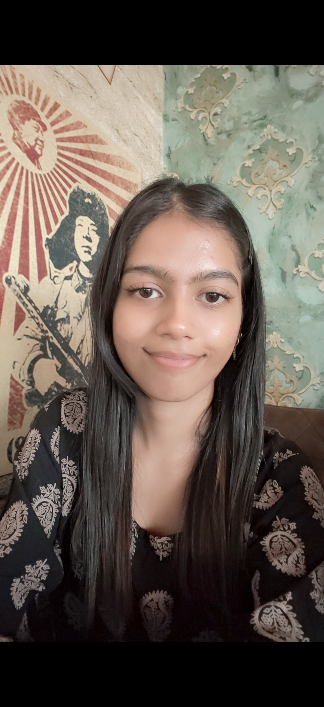

I am an aspiring technology professional with an interest in programming, machine learning, data analytics, cybersecurity, and software development. I enjoy exploring how technology works, learning new concepts, and building practical projects that help me grow step by step.

I am Antara Deb, a Computer Science and Engineering student at Barak Valley Engineering College, Assam, currently pursuing my B.Tech degree (2023–2027).
My academic journey has introduced me to programming, database management, data structures, machine learning, computer networks, operating systems, distributed systems, and cybersecurity.
I am interested in understanding how technology can solve practical problems. Through academic work, internships, collaborative projects, and independent learning, I am continuously working to strengthen my technical foundation.
I have explored machine learning and data mining through Market Basket Analysis, worked with a cybersecurity-focused SIEM project, and am developing a major project around cardiovascular disease risk prediction and Explainable AI.
I do not consider myself an expert. I value curiosity, consistency, practical experience, and the willingness to learn from mistakes.
Curiosity: Exploring new technologies and understanding the ideas behind them.
Problem-solving: Improving my logical thinking and approaching problems step by step.
Practical learning: Applying classroom concepts through projects and hands-on experience.
Growth: Becoming more confident, independent, and capable with every experience.
These are the technologies, concepts, and tools I have studied, explored, or used during coursework and projects. I am continuing to strengthen my understanding through practice.
Building programming fundamentals and logical thinking.
Core concepts that support software and system development.
Exploring data-driven methods and predictive modelling.
Learning security concepts and working with security tools.
Working with data preparation and basic analysis concepts.
Tools and technologies explored during learning and projects.
A selection of academic work, practical learning, and collaborative contributions from my journey in technology.